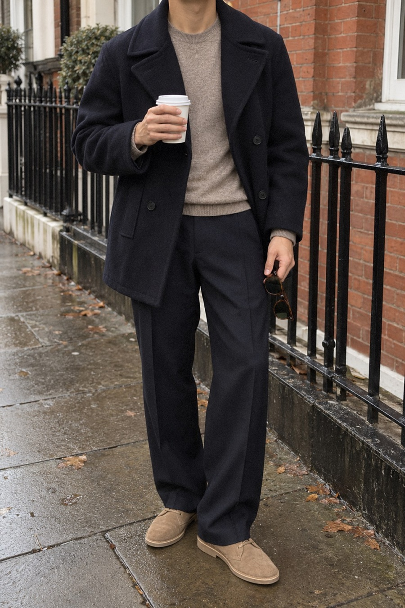
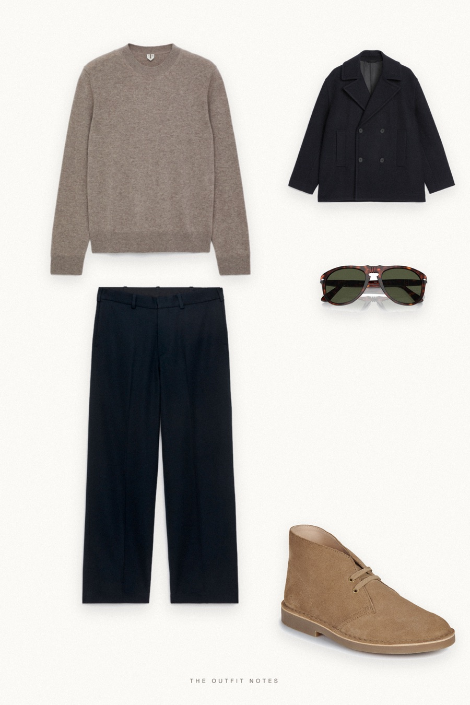

Navy Morning
pea coat, cream cashmere


An old money winter outfit for men: the ARKET wool-blend pea coat in navy over a pure cashmere crew-neck in cream, with ARKET loose fit navy wool trousers and Clarks sand suede desert boots. Persol 649 sunglasses are the only extra. Navy and cream stay clean, quiet luxury that works from the office to a weekend coffee.
The pieces
This page contains affiliate links: if you buy through them, we may earn a commission at no extra cost to you. Disclosure.
 ARKET
ARKET
Navy wool pea coat
Shop ARKET
ARKET
Beige cashmere crewneck
Shop ARKET
ARKET
Navy loose wool trousers
Shop Clarks
Clarks
Sand suede desert boots
Shop Persol
Persol
Havana 649 sunglasses
Shop
Prices are indicative, taken when the look was published, and may have changed. Pictures of the outfit are AI-generated illustrations of real products; the product photos are the retailers' own.
Published 1 October 2026.